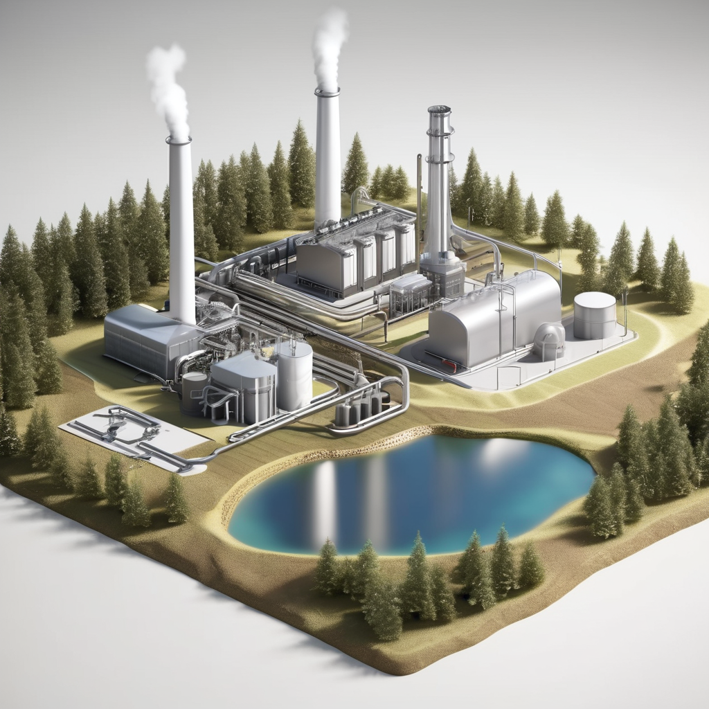
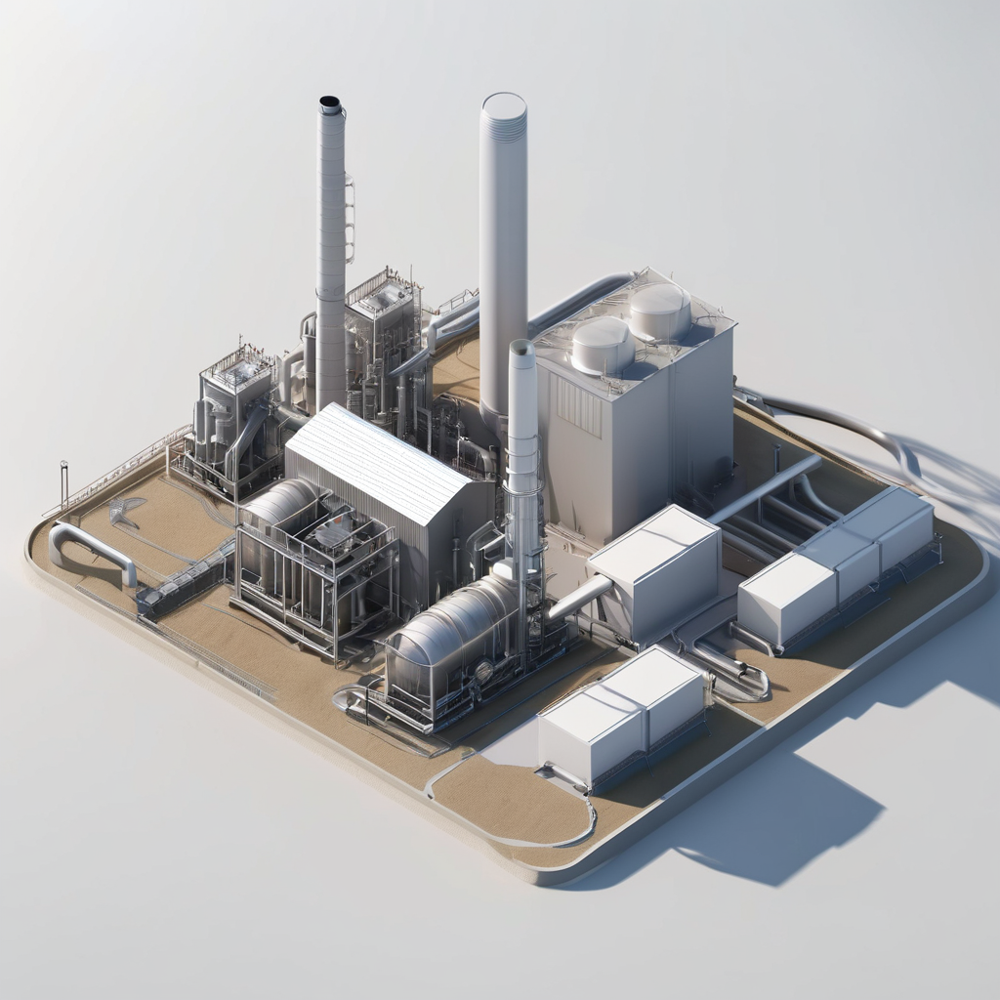
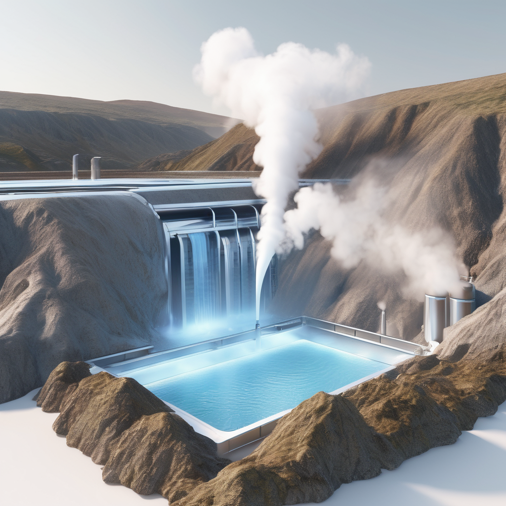

Energy: Powering Our Future

Geothermal energy harnesses the heat generated by the Earth's core to produce clean and sustainable electricity. This page delves into the world of geothermal energy, exploring its technology, benefits, considerations, and exciting future potential..
How Does Geothermal Energy Work?

The process of harnessing geothermal energy involves tapping into the natural heat of the Earth's interior. Here's a breakdown of the process:
1. Heat Source: Wind, generated by the unequal heating of the Earth's surface by the sun, blows across the blades of a wind turbine.
2. Heat Extraction: The wind exerts force on the blades, causing them to rotate. This rotation creates kinetic energy.
3. Steam Production: The rotating blades are connected to a shaft that spins a generator.
4. Turbine Rotation: The spinning generator converts the kinetic energy of the shaft rotation into electricity through electromagnetic induction.
5. Electricity Generation:The generated electricity travels through a network of cables to transformers, ultimately reaching homes and businesses.
6. Power Distribution: The generated electricity is transmitted through power lines to homes, businesses, and industries.
Geothermal power plants can vary in design depending on the type of geothermal resource available, whether it's steam-dominated, hot water-dominated, or enhanced geothermal systems.
The Advantages of Geothermal Energy
Geothermal energy offers a compelling solution to our energy needs with its numerous advantages:
• Clean and Sustainable:: Geothermal power plants produce minimal greenhouse gas emissions and have a small environmental footprint.
• Constant Energy Supply: Unlike solar or wind energy, geothermal power is available 24/7, providing a reliable source of electricity.
• Localized Resource:Geothermal power plants can be built near areas of high heat flow, reducing transmission losses and costs.
• Longevity: Geothermal reservoirs can sustain power production for decades or even centuries with proper management.
• Co-Production: Some geothermal plants can extract valuable minerals or direct-use heat alongside electricity generation.
Considerations for Geothermal Energy

While geothermal energy has many benefits, there are also considerations to take into account:
• Resource Limitations: Not all regions have suitable geothermal resources for power generation, limiting its widespread adoption.
• Environmental Impact: Drilling and fluid injection processes can cause seismic activity and may have local environmental consequences.
• Technology Challenges: Enhanced geothermal systems (EGS) still face technological and logistical challenges for widespread deployment.
The Future of Geothermal Energy

Geothermal energy holds great promise for the future of sustainable power generation:
• Technological Advancements Ongoing research aims to improve drilling techniques, increase reservoir efficiency, and develop new power plant designs.
• Enhanced Geothermal Systems: EGS technologies offer the potential to unlock geothermal resources in areas previously considered unsuitable.
• Co-Production Opportunities:Innovations in binary cycle technology and mineral extraction could enhance the economic viability of geothermal projects.
By addressing challenges and capitalizing on opportunities, geothermal energy can play a significant role in the transition to a sustainable energy future, providing clean and reliable power for generations to come.